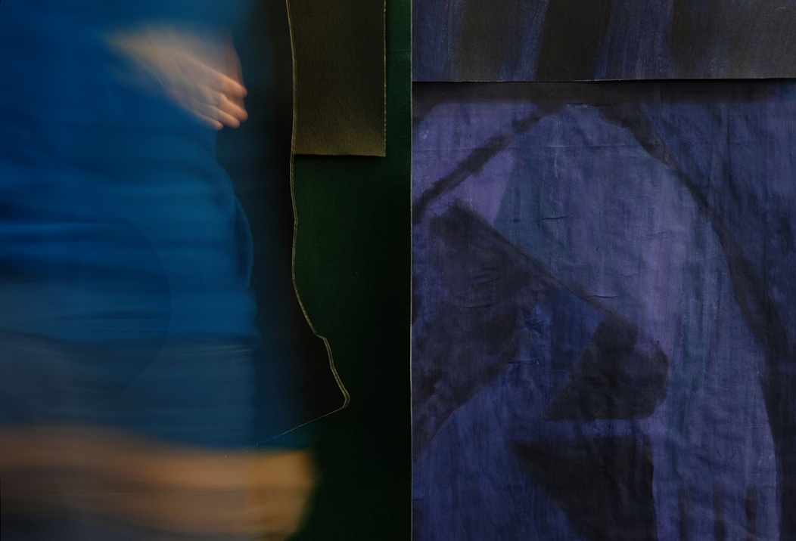

M.E. Sparks is an artist and educator based in Winnipeg, Treaty 1 Territory, where she is a faculty member at the University of Manitoba School of Art. Sparks holds an MFA from Emily Carr University of Art + Design and a BFA from NSCAD University. She is the recipient of research and creation grants from Canada Council for the Arts, Manitoba Arts Council, Winnipeg Arts Council, BC Arts Council, and Arts Nova Scotia, and was a finalist in the 2017 and 2018 RBC Canadian Painting Competition. Her work has been included in exhibitions at the Gordon Smith Gallery of Canadian Art (North Vancouver), Alternator Centre for Contemporary Art (Kelowna), Trapp Projects (Vancouver), Access Gallery (Vancouver), The Painting Center (NYC), Galerie Shibumi (NYC), AceArtInc. (Winnipeg), Galerie Buhler Gallery (Winnipeg), among others. Sparks has participated in residencies in Canada, Germany, Finland, and the USA, most recently at the Vermont Studio Center and NARS Foundation International Residency.
I work with methods of painting and collage to examine the relationship between surface, image, and materiality. Through a process of fragmenting and recombining borrowed forms, both art historical and autobiographical, I search for the moment an image loses its representational solidity and orientation. While figurative traces often remain within my paintings, I am interested in how and when a familiar form slips from its origins, resists classification, and evokes a feeling of disorientation.
In recent installation and video work, this process of abstraction unfolds through the cutting, draping, and layering of painted canvas and recycled fabric. By pulling apart and reassembling once-whole paintings, the art historical images I draw from are distanced from their sources, becoming both faintly familiar signifiers and new, autonomous objects. These image-objects hover at the edge of recognition, and I think of them as both resistant and flirtatious forms. They playfully lean into representational space, yet withhold the ease and immediacy of being pinned down, defined, and categorized. Modular in nature, the draped paintings defer a finished state by suggesting the possibility of future reconfiguration. Rather than present a linear narrative, this potential for reassembly tempers expectations of legibility, interrupts an immediate reading of the image, and insists on duration.
Across all facets of my practice, I see painting as a space of complication rather than confirmation. I question how the viewer may become caught, willingly, in a state of uncertainty or disorientation, described by the feminist scholar, Sarah Ahmed, as “bodily experiences that throw the world up, or throw the body from its ground”. My work plays with the vulnerability and transformative potential that arise through the experience of disorientation — when we are not quite able to name what we see — and how this might lead to a reorientation; in the ways we we observe, sift through, and find meaning in the condensed and collapsing layers of visual culture.